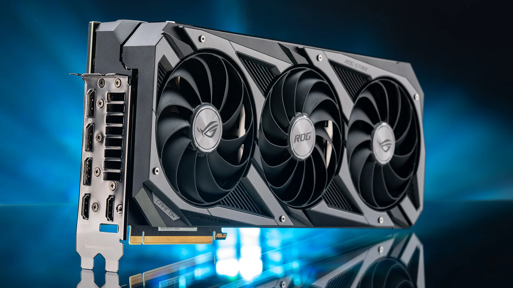
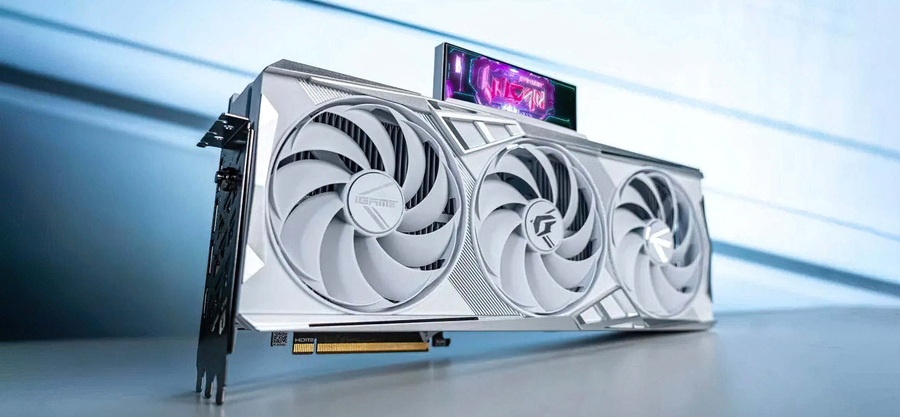
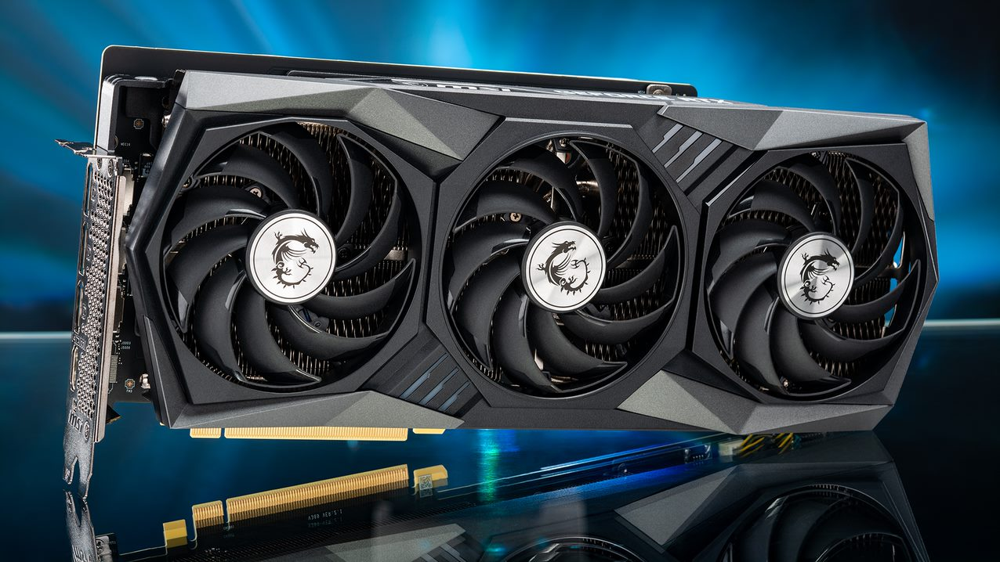

Analise: RTX 3070 ASUS ROG
RTX 3070 ASUS ROG

Review: RTX 4080 iGame WHITE
RTX 4080 iGame WHITE

Gigabyte GeForce RTX 3060 Gaming OC: análise
Gigabyte RTX 3060 Gaming OC

Review: RTX 3070 ASUS ROG
RTX 3070 ASUS ROG
ANÁLISE: MSI GeForce RTX 3080 Gaming X Trio
MSI GeForce RTX 3080 Gaming X Trio
